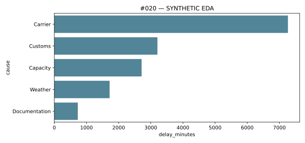

PROJETO #020 · ANÁLISE EXPLORATÓRIA
Critical Freight Delay Root-Cause EDA
Dados integralmente sintéticos. O estudo utiliza código executado de verdade; não representa desempenho industrial observado, dados externos nem impactos causais comprovados. A visualização Plotly depende de conexão com a CDN do Plotly.
Problema
Descrever e priorizar categorias de atraso de fretes críticos.
Metodologia
Pareto de minutos atrasados e gasto expresso associado por causa reportada.
Resultados reproduzíveis do dataset
Gráfico gerado por Seaborn / Matplotlib

Abrir gráfico interativo Plotly ↗Métricas estruturadas (JSON) ↗Interpretação
A classificação de causas já foi atribuída sinteticamente; não implica causalidade.
Decisão possível
Investigar evidência documental e relações contratuais antes de concluir causa-raiz.